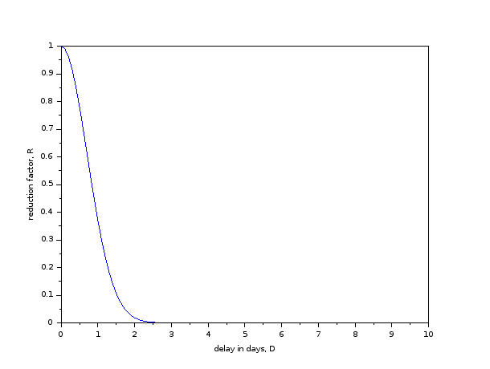

ES 622: Finite Element Methods - Spring 2022
Table of Contents
Basic Information
| Class timings | Tuesday, Wednesday, Friday, 11:05-12:00 hrs |
|---|---|
| Class location | AB 7/101 |
| Online link | Class link / Live Notes |
| Instructor | Gaurav Srivastava (gauravs@iitgn.ac.in) |
| TA | Dravesh Yadav (dravesh.yadav@iitgn.ac.in) |
Course objectives, syllabus, books, pre-requisites
General philosophy of the course
In a world where a large number of simulation tools are available and most people assume they know how to perform a finite element analysis, this course focuses on the fundamentals and aims to equip the students with the 'how' and 'why' of finite element simulations. It covers the fundamental aspects of the finite element method that are required to understand what goes on under the hood in available simulation software.
Objectives
- To learn the fundamentals of the finite element method.
- To develop a computer program to perform finite element analysis of simple PDEs.
- To develop an understanding of what goes on under the hood of commercial finite element packages.
After finishing this course, you will
- know an alternative representation of physical laws (called weak form)
- be able to convert any given linear partial differential equation (PDE) to its corresponding weak form
- be able to develop finite element formulation for any physical problem governed by a PDE
- have developed a computer code for solving linear PDEs using the finite element method
- know about different types of finite elements and their suitability for different types of physical problems
- have some idea of potential problems that can arise in typical finite element solutions
- know how much error can be expected in finite element analysis
Syllabus
- Review of basic mathematical preliminaries.
- Strong and weak forms, Galerkin's approximation.
- 1D, 2D, and 3D finite element formulations, isoparametric elements. Error behavior.
- Finite element formulation of elliptic PDEs (elasticity equation), parabolic PDEs (heat equation), and hyperbolic PDEs (wave equation).
Reference Books
- An Introduction to the Finite Element Method - J.N. Reddy.
- Introductory Finite Element Method - C.S. Desai.
- Finite Element Procedures - K.-J. Bathe.
- The Finite Element Method: Linear Static and Dynamic Finite Element Analysis - T.J.R Hughes.
Pre-requisites
- Knowledge of basic linear algebra:
- rank, column space, null space of a matrix,
- solving system of linear algebraic equations,
- computing eigenvalues and eigenvectors.
- rank, column space, null space of a matrix,
- Knowledge of a programming language:
- In case you feel adventurous, you can use C++ or FORTRAN as well.
Course Policies
Etiquette
- Please be considerate about everyone's time.
- In all emails pertaining to this course, please have "ES622" in the subject line.
- (note that there is no space or hyphen or anything between ES and 622)
Cheating
Cheating cases (assignments/codes/exams/project) will be awarded an F grade and will be reported to academic office. It is expected that this will never happen and everyone will uphold the honor code.
Late submissions
All delays beyond the defined deadlines will attract reduction in marks as per the following curve. The reduction factor, \(R\) will be multiplied to the obtained marks. Mathematically, it is given by: \(R = \exp(-D^2)\), where \(D\) is the total delay in days (will be counted hourly, i.e. fractional days are possible). 
Grading
Following will be the weightage of different components of assessment
| Component | Weightage |
|---|---|
| Homework assignments | 20% |
| Spot quizzes | 15% |
| Exams (mid, end) | 25% each |
| Project | 15% |
Modes of formal assessment
- There will be two types of assignments: analytical/hand calculation and coding.
- For coding assignments, submission of source code will be required.
- Expect one assignment per week.
- Spot quizzes will primarily be objective type. Expect one quiz per week.
- Exams will primarily be subjective / coding type. They may be in-class or take-home.
Emphasis on self-learning
It is important to develop the habit of self-learning. A number of reading assignments and self-exercises will be given during the course. These will not be formally graded and it will be expected that students will go through them on a regular basis on their own.
Project
The basic idea of a project is to utilize the knowledge gained from this course to a real-life situation or to better understand certain concepts that remain hidden otherwise. Try to answer some/more such questions during the project. Ideally, you would choose a reasonably complicated looking real-world problem and analyze it using a software (either the one you will develop as part of the course, or ANSYS, or ABAQUS, or any other that you may know of).
Timeline
Project is to be done in groups of not more than 3. Following timeline must be adhered to for all submissions. (this timeline will be updated during the first week of classes)
| Date | Task | Marks |
|---|---|---|
| Feb 4 | Formation of groups, identification of topic. SUBMIT group details and abstract of proposed work. | 10 |
| Feb 18 | Feedback from instructor about project topics | -10* |
| Mar 17 | SUBMIT 2-3 page detailed report discussing overall approach, idealizations, etc. required for project | 20 |
| Apr 16 | Project presentations (one per group) | 30 |
| Apr 18 | SUBMIT final report. | 40 |
\(^*\) In case the instructor delays in giving feedback, every group gets 10 bonus points.
Guidelines on intermediate detailed report
This should have a clear roadmap of the activities being planned including the problem definition, governing equations, solution methodology, objectives of the study, and final deliverables.
Guidelines on the final report
This report should be organized as follows:
- Introduction (including background and motivation for the chosen problem)
- Literature Review (a brief review of recent literature dealing with the chosen problem)
- Theoretical Formulation (details of governing equations - PDE and weak/energy form, discretization)
- Verification/validation (to demonstrate the accuracy of the solution approach)
- Numerical studies (e.g. to show effects of parameters, discussions on physical behavior)
- Conclusions (summary of main findings of the study)
- References
Following are the titles of some projects done in previous years
- Free Vibration Of Thin Plates
- Finite Element Modelling of Thermal Management Systems of Laptops for effectiveness analysis
- Analysis of Cold Rolling process using Finite Element Analysis in Ansys Workbench
- Static Analysis of Leaf and Coil Spring
- Design and Analysis of Rolling Process
- Thermal expansion and Stress analysis of the Radial Turbine
- Modelling Reaction in Batch Reactor
Calendar (tentative)
| Lec No | Date | Topic | Attachments |
|---|---|---|---|
| 1 | 4 January, Tuesday | Stretching of 1D bar. Derivation of governing equations - force equilibrium, energy and virtual work forms. | V1 / V2 |
| 2 | 5 January, Wednesday | Notion and equivalence of strong and weak forms. Fundamental lemma of calculus of variations | V3 / V4 / V5 |
| 3 | 7 January, Friday | Euler-Lagrange equation. Ritz-Galerkin method of solving weak form | V6 / A1 (due 13 Jan) |
| 4 | 11 January, Tuesday | Ritz-Galerkin method of solving weak form | V7 |
| 5 | 12 January, Wednesday | Idea of spatial discretization. Application of boundary conditions. Formalization of FEM. | V8 |
| 14 January, Friday | Makar Sankranti | A2 (due 21 Jan) | |
| 6 | 18 January, Tuesday | Element-level view of formulating FEM matrices. Boundary conditions. | Quiz 1 / V9 / V10 |
| 7 | 19 January, Wednesday | Properties of shape functions. Formulation of 1D reference element. | V11 / V12 |
| 8 | 21 January, Friday | Gauss quadrature. Computer implementation of 1D FEM. | A3 (due 28 Jan) / V13 |
| 9 | 25 January, Tuesday | Computer implementation of 1D FEM. | Quiz 2 |
| 26 January, Wednesday | Republic Day | ||
| 10 | 28 January, Friday | Construction of 1D shape functions using Lagrange polynomials. Error computations. | A4 (due 4 Feb) |
| 11 | 1 February, Tuesday | Computing weak form of 2D Poisson equation. | Quiz 3 |
| 12 | 2 February, Wednesday | 2D FE formulation. | |
| 13 | 4 February, Friday | Isoparametric bilinear element. | |
| 14 | 8 February, Tuesday | Isoparametric bilinear element. | Quiz 4 |
| 15 | 9 February, Wednesday | Treatment of boundary integral in 2D problems. | |
| 16 | 11 February, Friday | Treatment of boundary integral in 2D problems. | |
| 17 | 15 February, Tuesday | Consideration of vector fields in 2D. | Quiz 5 |
| 18 | 16 February, Wednesday | Consideration of vector fields in 2D. | |
| 19 | 18 February, Friday | Weak form of time dependent problems. | A5 (due 4 Mar) |
| 20 | 22 February, Tuesday | Weak form of time dependent problems. | Quiz 6 |
| 21 | 23 February, Wednesday | Time integration of parabolic problems. | |
| 22 | 25 February, Friday | Time integration of hyperbolic problems. | |
| 26 February - 5 March | Mid Semester Exam Week | ||
| 27 February, 9-11 AM | Mid Semester Exam (7/210) | ||
| 6 March - 13 March | Mid Semester Recess Week | ||
| 23 | 15 March, Tuesday | Time integration. | |
| 24 | 16 March, Wednesday | 1D functionals. | |
| 18 March, Friday | Holi | ||
| 25 | 22 March, Tuesday | 1D functionals and their link with strong and weak forms. | |
| 26 | 23 March, Wednesday | 1D functionals with multiple arguments. | |
| 27 | 25 March, Friday | 1D functionals. | |
| 28 | 29 March, Tuesday | 2D functionals. | A6 (due 5 April) |
| 29 | 30 March, Wednesday | 2D functionals. | |
| 30 | 1 April, Friday | Locking behaviour. | |
| 31 | 5 April, Tuesday | Issues in usual FEM in incompressible materials. | A7 (due 12 April); Quiz 7 |
| 32 | 6 April, Wednesday | B-bar method for handling incompressible problems. | |
| 33 | 8 April, Friday | Hu-Washizu variational principle. | |
| 34 | 12 April, Tuesday | Shear locking in elasticity problems. | |
| 35 | 13 April, Wednesday | Shear locking in elasticity problems. | |
| 15 April, Friday | Good Friday | ||
| 36 | 19 April, Tuesday | Numerical artifacts in different FE elements. | |
| 37 | 20 April, Wednesday | Method of manufactured solutions for verification of numerical methods. | |
| 38 | 22 April, Friday | Calculation of secondary quantities like stress, strain, and flux. | |
| 26 April - 4 May | End Semester Exam Week | ||
| 2 May, 2-4:30 PM | End Semester Exam (7/103) |